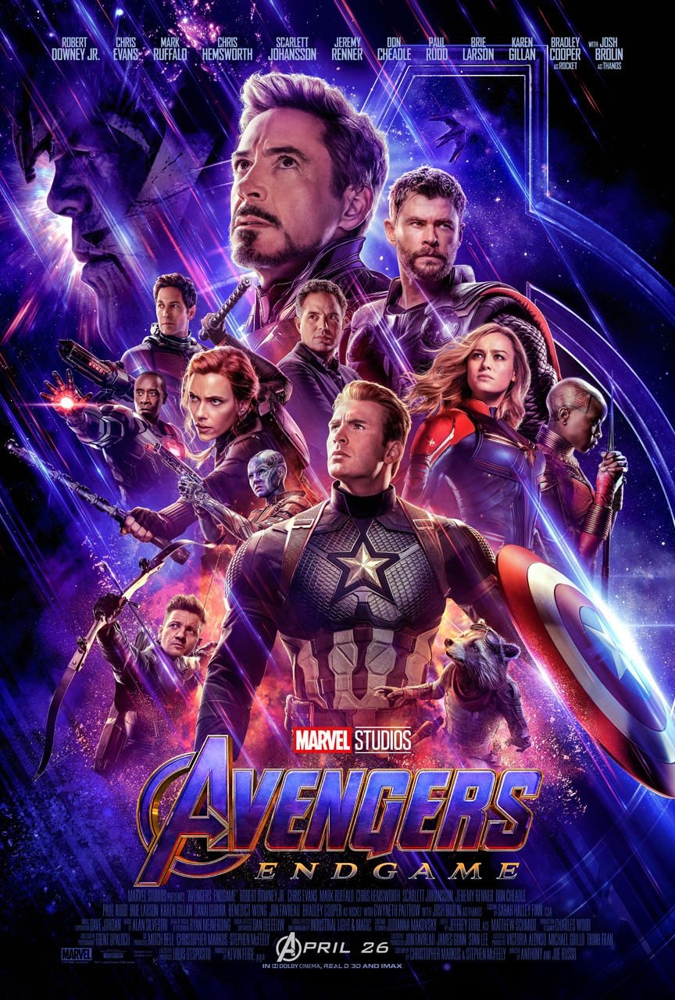
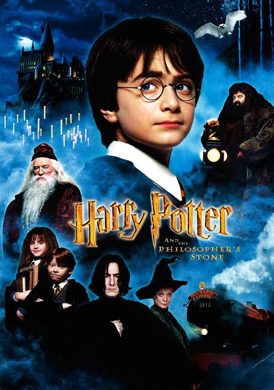
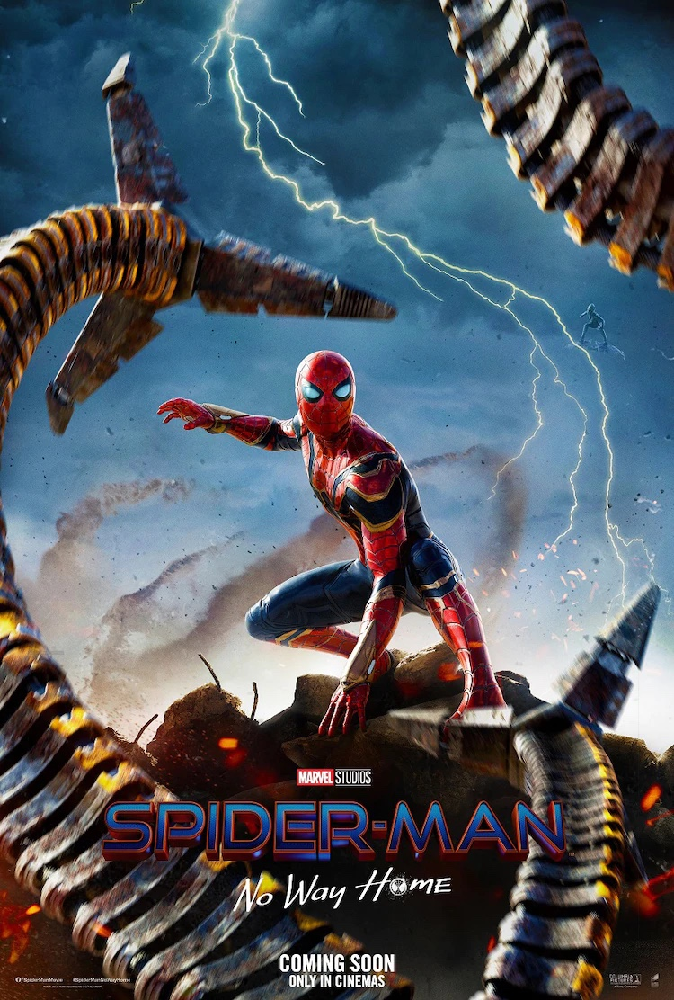

映画が好きな理由
映画は自分の考え方や価値観がひっくり返されることが多くあり人生の教科書と言っても過言ではないぐらい人生に影響を与えます。何かにつまづいている時、悩み事があるときなどに観ると気持ちが軽くなり、嫌なことは綺麗さっぱり忘れます。さらに、映画は自分の人生では体験できないような世界を知ることができ、ドキドキやワクワクが詰まっているのが魅力です。
好きな映画 TOP3
１.アベンジャーズ/エンドゲーム

『アベンジャーズ』シリーズの完結編で、『アベンジャーズ/インフィニティ・ウォー』でヒーローたちの前に立ちはだかったサノスとの戦いを描くアクション大作。人類の半数が失われた地球で、アベンジャーズのメンバーが再び壮絶なバトルを見せる。メガホンを取るのは、前作や『キャプテン・アメリカ』シリーズなどのアンソニー＆ジョー・ルッソ。アイアンマンことトニー・スターク役のロバート・ダウニー・Jrらおなじみの面々が出演する。
あらすじ
これまで暗躍を続けていた狂える最凶最悪の敵サノスがその姿を現し、6つの｢インフィニティ・ストーン｣を銀河の各地から次々と自らの手で強奪。彼の目的は、インフィニティ・ストーンをすべてそろえ、｢全宇宙の半分の生命を滅ぼす｣というもの。 最強のヒーローチームである｢アベンジャーズ｣は、インフィニティ・ストーンをサノスの魔の手から守るために戦いを始める。しかし、最後までその力を結集することができず、あと一歩のところで強大すぎる敵に敗れてしまう。 こうしてすべてのインフィニティ・ストーンをそろえたサノスは、｢宇宙の生命を半分にし不均衡を正す｣という悲願を達成した。宇宙の住人の半分は、多くのアベンジャーズたちを含め、灰となって消滅。サノス自身は遠く離れたどこかの惑星へ瞬間移動し、静かに勝利の余韻に浸るのだった。
２.ハリーポッターシリーズ

イギリスの女性作家による、魔法ファンタジー小説。児童書に分類されることもありますが、全編通してダークファンタジーであり、魔法学校の生徒の人間模様や死を取り扱っているためか、大人のファンが多い作品です。 1990年代のイギリスを舞台として、魔法学校の生活や主人公「ハリーポッター」の両親殺しの殺人魔法使いとの戦いが描かれています。いじわるな親戚の元で何も幸せのない環境で育ったハリーが魔法学校で友人を得て成長し、殺人魔法使いと戦う物語です。 ちなみに、最近公開されている「ファンタスティックビースト」は、ハリーポッターよりも少し前の物語。
あらすじ
ハリーポッターシリーズで描かれるメインストーリーは、ハリーポッター（主人公）とヴォルデモート（悪役）の戦いです。 ヴォルデモートは、史上最強の闇の魔法使い。 まだハリーが赤ん坊だった頃、ハリーを殺そうとしましたが、殺し損ねます。 その上、ハリーを殺すために唱えた死の呪文が跳ね返って瀕死状態になりました。 しかし、ストーリーが進むにつれて、ヴォルデモートは完全復活し、ハリーを殺そうと狙ってきます。 一方、ハリーポッターはというと、ヴォルデモートやヴォルデモート率いる死喰い人との戦いを繰り返しながら、ヴォルデモートを倒そうと決意します。 シリーズが進むにつれ、お互いの過去や弱点、情報を集めていく両者。 ハリーポッターVSヴォルデモート卿の戦いは、こうしてじわじわと進んでいきます。
３.スパイダーマン/ノー・ウェイ・ホーム

スパイダーマンシリーズの最新作で、全米の週末3日間における興行収入の2億6013万ドル（約297億円）はコロナ禍における最高記録であり、一時期は全米オープニング興行収入歴代第3位と報じられてもいたが、更新された最新の数字では「アベンジャーズ/インフィニティ・ウォー」を抜き歴代2位の記録に。また、映画評論サイトRotten Tomatoesでは批評家94%にオーディエンス98%という、圧倒的な支持率を獲得している。
あらすじ
2021年アメリカ映画。ミステリオによって正体を世間に暴かれ、殺人犯の容疑までかけられてしまったピーター・パーカーの人生は大混乱に陥る。高校生活最後の1年を恋人のMJ、親友のネッドと共に楽しもうとするが、正体がバレたことによりピーターの周囲の人々を混乱に巻き込んでしまう。この事態を解決するために、ピーターはかつて共にサノスと戦った魔術師ドクター・ストレンジのもとを訪ねる。全ての人から正体に関する記憶を消してほしいというピーターの願いを聞き入れたストレンジは、禁じられた魔法の呪文を唱える。しかし呪文は思いもよらぬ効果をもたらせ、多次元宇宙『マルチバース』の扉が開いてしまった。ニューヨークの街にヴィランの群れが現れ人々に危機が迫る。